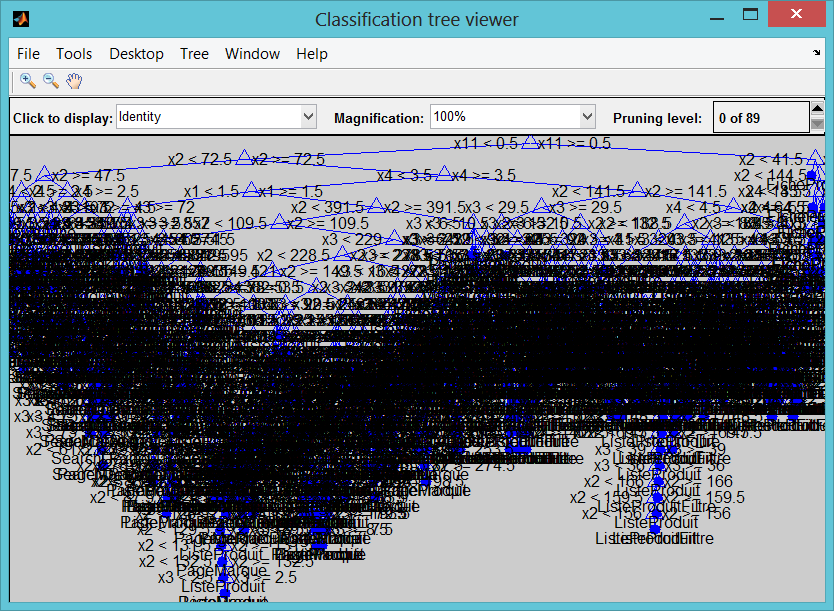
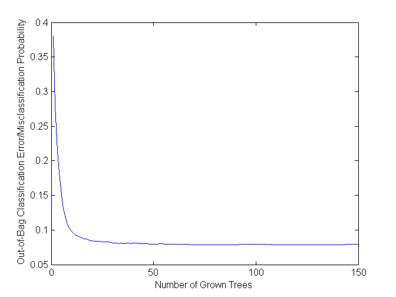
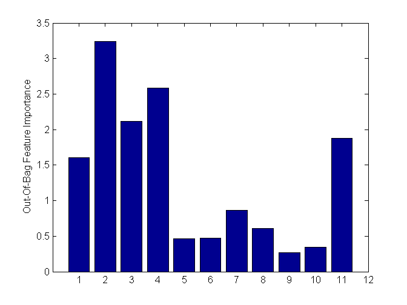

Machine Learning for links toxicity assessment
Machine learning techniques are often used for financial analysis and decision-making tasks such as accurate forecasting, classification of risk, estimating probabilities of default, and data mining. However, implementing and comparing different machine learning techniques to choose the best approach can be challenging. Machine learning is synonymous with Non-parametric modeling techniques. The term non-parametric is not meant to imply that such models completely lack parameters but that the number and nature of the parameters are flexible and determined from data.
Contents
- Loading data
- Cross Validation
- Tree performance on validating and training set
- Neural Networks
- Generalized Linear Model - Logistic Regression
- Discriminant Analysis
- Classification Using Nearest Neighbors
- Naive Bayes Classification
- Support Vector Machines
- Decision Trees
- Ensemble Learning: TreeBagger
- Estimating a Good Ensemble Size : learning curve
- Estimating Feature Importance
Loading data
load('shallow_crawl_cdiscount.mat');
disp(catPred);
Columns 1 through 4
'depth' 'outlinks_size' 'inlinks_size' 'nb_breadcrumbs'
Columns 5 through 7
'nb_aggregated_ra...' 'nb_ratings_values' 'nb_prices'
Columns 8 through 11
'nb_availabilities' 'nb_reviews' 'nb_reviews_count' 'nb_images'
Cross Validation
Cross validation is almost an inherent part of machine learning. Cross validation may be used to compare the performance of different predictive modeling techniques. In this example, we use holdout validation. Other techniques including k-fold and leave-one-out cross validation are also available.
In this example, we partition the data into training set and test set. The training set will be used to calibrate/train the model parameters. The trained model is then used to make a prediction on the test set. Predicted values will be compared with actual data to compute the confusion matrix. Confusion matrix is one way to visualize the performance of a machine learning technique.
% In this example, we will hold 40% of the data, selected randomly, for % test phase. cv = cvpartition(length(Y),'holdout',0.40); % Training set Xtrain = X(training(cv),:); Ytrain = Y(training(cv),:); % Test set Xtest = X(test(cv),:); Ytest = Y(test(cv),:); disp('Training Set') tabulate(Ytrain) disp('Test Set') tabulate(Ytest)
Training Set
Value Count Percent
FicheProduit 13298 45.68%
ListeProduit 5077 17.44%
ListeProduitFiltre 3113 10.69%
PageConcept 2 0.01%
PageMarque 3353 11.52%
SearchDexing 2770 9.51%
Unknown 1102 3.79%
Vitrine 398 1.37%
Test Set
Value Count Percent
FicheProduit 8854 45.62%
ListeProduit 3441 17.73%
ListeProduitFiltre 2086 10.75%
PageConcept 4 0.02%
PageMarque 2186 11.26%
SearchDexing 1786 9.20%
Unknown 782 4.03%
Vitrine 269 1.39%
Tree performance on validating and training set
t = classregtree(Xtrain,Ytrain); % See tree view(t) % How well did the single tree perform on the training set % very well but overfit the noise predY = t(Xtrain); %predY = round(predY); disp('Full tree training set') myCategoricalErrorRate(predY,Ytrain); C_tree = confusionmat(categorical(predY),categorical(Ytrain)); % Examine the confusion matrix for each class as a percentage of the true class C_tree = bsxfun(@rdivide,C_tree,sum(C_tree,2)) * 100 %#ok<*NOPTS> % Calculate the single tree's predictions on the validating set... predY = t(Xtest); disp('Full tree validating set') myCategoricalErrorRate(predY,Ytest); C_tree = confusionmat(categorical(predY),categorical(Ytest)); % Examine the confusion matrix for each class as a percentage of the true class C_tree = bsxfun(@rdivide,C_tree,sum(C_tree,2)) * 100 %#ok<*NOPTS>
Full tree training set
Tree, % Good classified rate on set : 95.6617
C_tree =
Columns 1 through 7
99.8048 0.1952 0 0 0 0 0
0.0389 90.3232 2.9595 4.8092 0 0.2531 1.6160
0 5.8114 94.0299 0 0 0 0.1588
0 5.4348 0 89.5229 4.0459 0.3019 0.6944
0 0.2872 0 4.9174 94.5800 0.0718 0.0718
0 0.1845 0 0 0.0923 99.1697 0.5535
0 12.0370 0 1.2346 0 0.6173 86.1111
NaN NaN NaN NaN NaN NaN NaN
Column 8
0
0
0
0
0.0718
0
0
NaN
Full tree validating set
Tree, % Good classified rate on set : 92.1373
C_tree =
Columns 1 through 7
99.8646 0.1354 0 0 0 0 0
0.0292 82.4577 6.5674 7.5890 0 0.3795 2.9772
0 12.4824 87.2830 0 0 0 0.2346
0 11.5665 0 81.6940 5.6922 0.3643 0.5920
0 0.2786 0 6.8524 92.4791 0.1671 0.1671
0 0.7792 0 0.1299 0 97.7922 1.1688
0 32.4444 0.4444 3.5556 0.4444 2.2222 60.8889
NaN NaN NaN NaN NaN NaN NaN
Column 8
0
0
0
0.0911
0.0557
0.1299
0
NaN
 Neural Networks
Neural Network Toolbox supports supervised learning with feedforward, radial basis, and dynamic networks. It supports both classification and regression algorithms. It also supports unsupervised learning with self-organizing maps and competitive layers.
One can make use of the interactive tools to setup, train and validate a neural network. It is then possible to auto-generate the code for the purpose of automation. In this example, the auto-generated code has been updated to utilize a pool of workers, if available. This is achieved by simply setting the useParallel flag while making a call to train.
[net,~] = train(net,inputs,targets,'useParallel','yes');
If a GPU is available, it may be utilized by setting the useGPU flag.
The trained network is used to make a prediction on the test data and confusion matrix is generated for comparison with other techniques.
% % % % % % % % % Use modified autogenerated code to train the network % % % % % % % % [~, net] = NNfun(Xtrain,Ytrain); % % % % % % % % view(net); % % % % % % % % % Make a prediction for the test set % % % % % % % % Y_nn = net(Xtest'); % % % % % % % % Y_nn = round(Y_nn'); % % % % % % % % % % % % % % % % % Compute the confusion matrix % % % % % % % % C_nn = confusionmat(categorical(Ytest),categorical(Y_nn)); % % % % % % % % % Examine the confusion matrix for each class as a percentage of the true class % % % % % % % % % % C_nn = bsxfun(@rdivide,C_nn,sum(C_nn,2)) * 100 %#ok<*NOPTS>
Generalized Linear Model - Logistic Regression
In this example, a logistic regression model is leveraged. Response may follow normal, binomial, Poisson, gamma, or inverse Gaussian distribution.
Since the response in this data set is binary, binomial distribution is suitable.
% Train the classifier % % % % % % glm = GeneralizedLinearModel.fit(Xtrain,Ytrain,'linear','Distribution','binomial','link','logit'); % % % % % % % % % % % % % Make a prediction for the test set % % % % % % Y_glm = glm.predict(Xtest); % % % % % % Y_glm = round(Y_glm); % % % % % % % % % % % % % Compute the confusion matrix % % % % % % C_glm = confusionmat(categorical(Ytest),categorical(Y_glm)); % % % % % % % Examine the confusion matrix for each class as a percentage of the true class % % % % % % C_glm = bsxfun(@rdivide,C_glm,sum(C_glm,2)) * 100
Discriminant Analysis
Discriminant analysis is a classification method. It assumes that different classes generate data based on different Gaussian distributions. Linear discriminant analysis is also known as the Fisher discriminant.
Here, a quadratic discriminant classifier is used.
% Train the classifier % % % da = ClassificationDiscriminant.fit(Xtrain,Ytrain,'discrimType','quadratic'); % % % % % % % Make a prediction for the test set % % % Y_da = da.predict(Xtest); % % % % % % % Compute the confusion matrix % % % C_da = confusionmat(categorical(Ytest),categorical(Y_da)); % % % % Examine the confusion matrix for each class as a percentage of the true class % % % C_da = bsxfun(@rdivide,C_da,sum(C_da,2)) * 100
Classification Using Nearest Neighbors
Categorizing query points based on their distance to points in a training dataset can be a simple yet effective way of classifying new points. Various distance metrics such as euclidean, correlation, hamming, mahalonobis or your own distance metric may be used. % % % % % % % % % % % % % Train the classifier % % % % % % knn = ClassificationKNN.fit(Xtrain,Ytrain,'Distance','seuclidean'); % % % % % % % % % % % % % Make a prediction for the test set % % % % % % Y_knn = knn.predict(Xtest); % % % % % % % % % % % % % Compute the confusion matrix % % % % % % C_knn = confusionmat(categorical(Ytest),categorical(Y_knn)); % % % % % % % Examine the confusion matrix for each class as a percentage of the true class % % % % % % C_knn = bsxfun(@rdivide,C_knn,sum(C_knn,2)) * 100
Naive Bayes Classification
Naive Bayes classification is based on estimating P(X|Y), the probability or probability density of features X given class Y. The Naive Bayes classification object provides support for normal (Gaussian), kernel, multinomial, and multivariate multinomial distributions
% The multivariate multinomial distribution (_mvmn_) is appropriate for % categorical features % % % % % Train the classifier % % % % Nb = NaiveBayes.fit(Xtrain,Ytrain); % % % % % % % % % Make a prediction for the test set % % % % Y_Nb = Nb.predict(Xtest); % % % % % % % % % Compute the confusion matrix % % % % C_nb = confusionmat(categorical(Ytest),categorical(Y_Nb)); % % % % % Examine the confusion matrix for each class as a percentage of the true class % % % % C_nb = bsxfun(@rdivide,C_nb,sum(C_nb,2)) * 100
Support Vector Machines
Support vector machine (SVM) is supported for binary response variables. An SVM classifies data by finding the best hyperplane that separates all data points of one class from those of the other class.
% % % % % % opts = statset('MaxIter',30000); % % % % % % % Train the classifier % % % % % % svmStruct = svmtrain(Xtrain,Ytrain,'kernel_function','rbf','kktviolationlevel',0.1,'options',opts); % % % % % % % % % % % % % Make a prediction for the test set % % % % % % Y_svm = svmclassify(svmStruct,Xtest); % % % % % % C_svm = confusionmat(categorical(Ytest),categorical(Y_svm)); % % % % % % % Examine the confusion matrix for each class as a percentage of the true class % % % % % % C_svm = bsxfun(@rdivide,C_svm,sum(C_svm,2)) * 100
Decision Trees
Classification trees and regression trees are two kinds of decision trees. A decision tree is a flow-chart like structure in which internal node represents test on an attribute, each branch represents outcome of test and each leaf node represents a response (decision taken after computing all attributes). Classification trees give responses that are nominal, such as 'true' or 'false'. Regression trees give numeric responses.
tic % Train the classifier t = ClassificationTree.fit(Xtrain,Ytrain); toc % Make a prediction for the test set Y_t = t.predict(Xtest); % Compute the confusion matrix C_t = confusionmat(categorical(Ytest),categorical(Y_t)); % Examine the confusion matrix for each class as a percentage of the true class C_t = bsxfun(@rdivide,C_t,sum(C_t,2)) * 100
Elapsed time is 0.570366 seconds.
C_t =
Columns 1 through 7
99.9887 0.0113 0 0 0 0 0
0.3487 82.1273 7.7012 0 7.3816 0.1453 0.1744
0 10.6903 89.2617 0 0 0 0
0 0 0 0 50.0000 25.0000 25.0000
0 11.8939 0 0 81.9305 5.6267 0.1830
0 0 0 0 7.1109 92.8331 0
0 1.6624 0 0 0.8951 0.3836 96.4194
0 37.5465 1.8587 0 4.8327 1.1152 3.3457
Column 8
0
2.1215
0.0479
0
0.3660
0.0560
0.6394
51.3011
Ensemble Learning: TreeBagger
Bagging stands for bootstrap aggregation. Every tree in the ensemble is grown on an independently drawn sample of input data. To compute prediction for the ensemble of trees, TreeBagger takes an average of predictions from individual trees (for regression) or takes votes from individual trees (for classification). Ensemble techniques such as bagging combine many weak learners to produce a strong learner.
From a marketing perspective, as we are creating this predictive model, it may be more important for us to classify yes correctly than a no. If that is the case, we can include our opinion using the cost matrix. Here, cost matrix specifies that it is 5 times more costly to classify a yes as a no.
%opts = statset('UseParallel',true); % Train the classifier tb = TreeBagger(150,Xtrain,Ytrain,'method','classification','OOBVarImp','on'); % Make a prediction for the test set [Y_tb, classifScore] = tb.predict(Xtest); Y_tb=double(categorical(Y_tb))-1; % Compute the confusion matrix C_tb = confusionmat(categorical(Ytest),categorical(Y_tb)); % Examine the confusion matrix for each class as a percentage of the true class C_tb = bsxfun(@rdivide,C_tb,sum(C_tb,2)) * 100
C_tb =
Columns 1 through 7
0 0 0 0 0 0 0
0 0 0 0 0 0 0
0 0 0 0 0 0 0
0 0 0 0 0 0 0
0 0 0 0 0 0 0
0 0 0 0 0 0 0
0 0 0 0 0 0 0
0 0 0 0 0 0 0
NaN NaN NaN NaN NaN NaN NaN
NaN NaN NaN NaN NaN NaN NaN
NaN NaN NaN NaN NaN NaN NaN
NaN NaN NaN NaN NaN NaN NaN
NaN NaN NaN NaN NaN NaN NaN
NaN NaN NaN NaN NaN NaN NaN
NaN NaN NaN NaN NaN NaN NaN
Columns 8 through 14
0 100.0000 0 0 0 0 0
0 0.3778 88.8695 6.7713 2.8480 0.1744 0.0291
0 0 14.9569 85.0431 0 0 0
0 0 0 0 50.0000 25.0000 25.0000
0 0 18.2525 0 77.1729 4.5746 0
0 0 0 0 7.0549 92.9451 0
0 0 2.1739 0.2558 0.7673 0.3836 96.1637
0 0 49.4424 0.3717 5.2045 2.6022 1.1152
NaN NaN NaN NaN NaN NaN NaN
NaN NaN NaN NaN NaN NaN NaN
NaN NaN NaN NaN NaN NaN NaN
NaN NaN NaN NaN NaN NaN NaN
NaN NaN NaN NaN NaN NaN NaN
NaN NaN NaN NaN NaN NaN NaN
NaN NaN NaN NaN NaN NaN NaN
Column 15
0
0.9300
0
0
0
0
0.2558
41.2639
NaN
NaN
NaN
NaN
NaN
NaN
NaN
Estimating a Good Ensemble Size : learning curve
Examining the out-of-bag error may give an insight into determining a good ensemble size.
figure; plot(oobError(tb)); xlabel('Number of Grown Trees'); ylabel('Out-of-Bag Classification Error/Misclassification Probability');
Estimating Feature Importance
Feature importance measures the increase in prediction error if the values of that variable are permuted across the out-of-bag observations. This measure is computed for every tree, then averaged over the entire ensemble and divided by the standard deviation over the entire ensemble.
figure; bar(tb.OOBPermutedVarDeltaError); ylabel('Out-Of-Bag Feature Importance'); set(gca,'XTick',1:16) % names2 = names; % names2{5} = ' default'; % set(gca,'XTickLabel',names2) % Use file submitted from a user at MATLAB Central to rotate labels %rotateXLabels( gca, 60 ) [~,idxvarimp] = sort(tb.OOBPermutedVarDeltaError, 'descend');